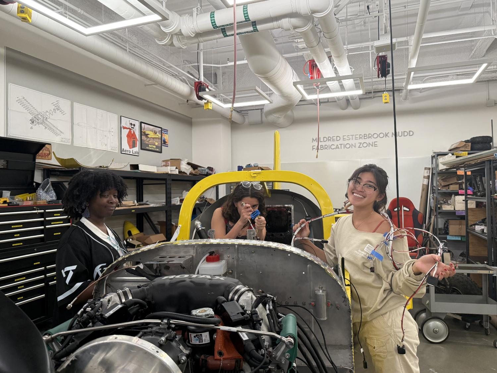
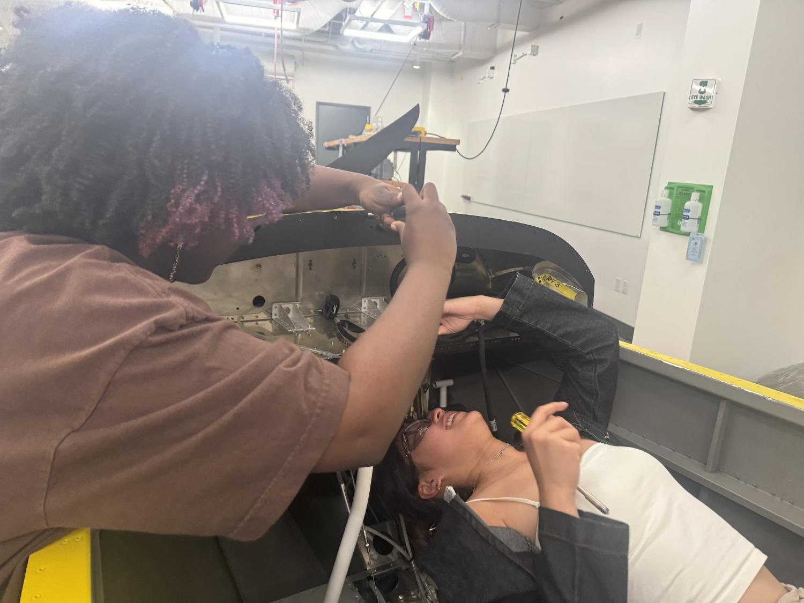

The work
Aircraft assembly is hands-on systems integration, bringing mechanical fit, electrical installation, component placement, blueprint interpretation, and careful verification together.
My contribution
Installed avionics, antennas, canopy and latching components, and fasteners. Read technical blueprint drawings and added and verified lead counterweights for mass balance.

Connecting the systems
Inside the RV-12 during avionics and mechanical integration.

Working through the assembly
Team members working around the RV-12 instrument-panel structure.
Outcome
Our professor flew the finished RV-12 after we completed the build, and it successfully took off and flew.